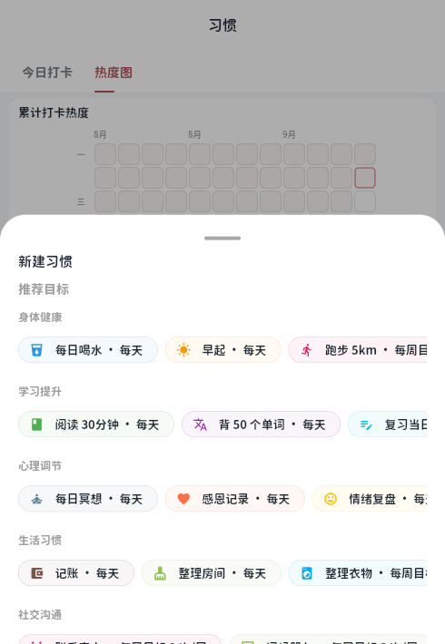
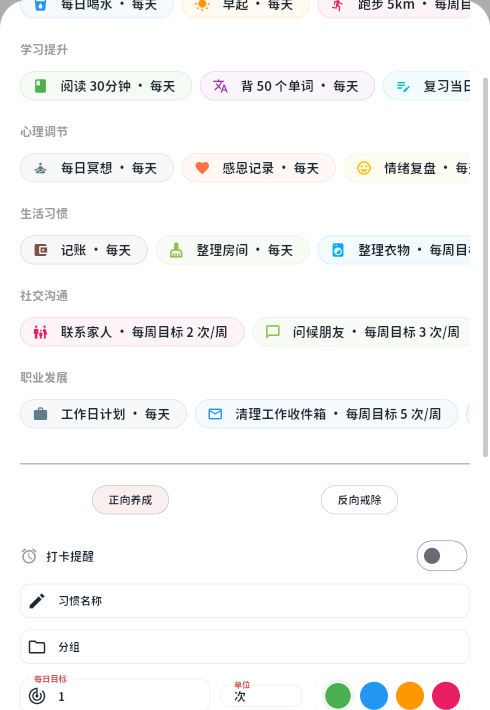
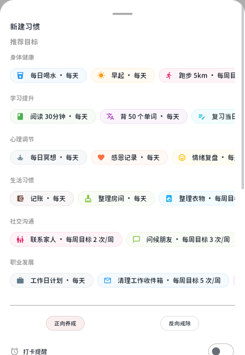
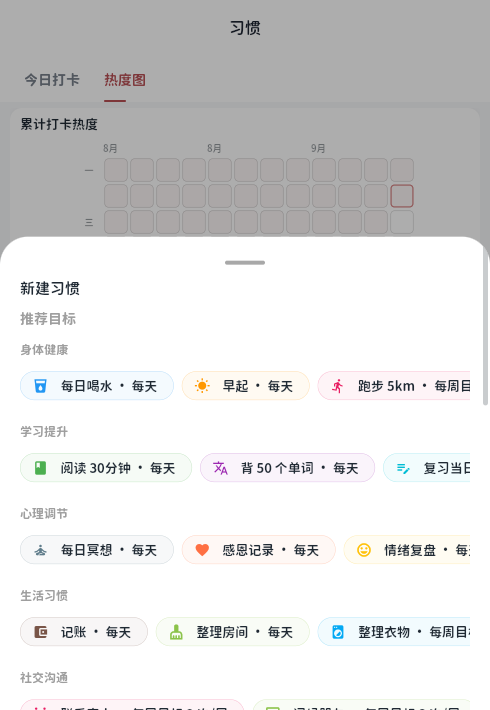
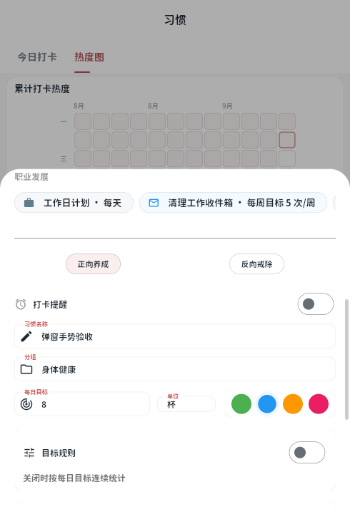
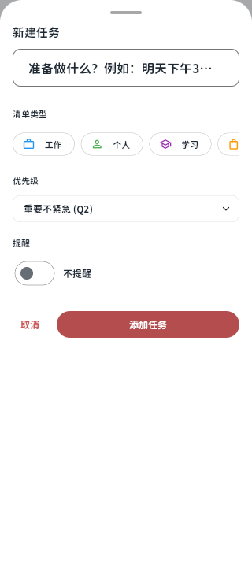
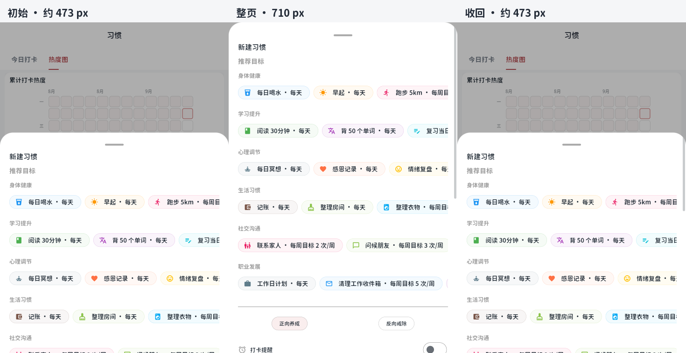

底部弹窗：浏览时展开，到顶后再次拉动收回
实际 Flutter Web release 构建。初始高度保留半屏至三分之二屏，向下浏览内容后展开到可用整页；返回内容顶部后保持展开，再次反向拉动才收回。输入和选择在切换中保留。







实际 Flutter Web release 构建。初始高度保留半屏至三分之二屏，向下浏览内容后展开到可用整页；返回内容顶部后保持展开，再次反向拉动才收回。输入和选择在切换中保留。






